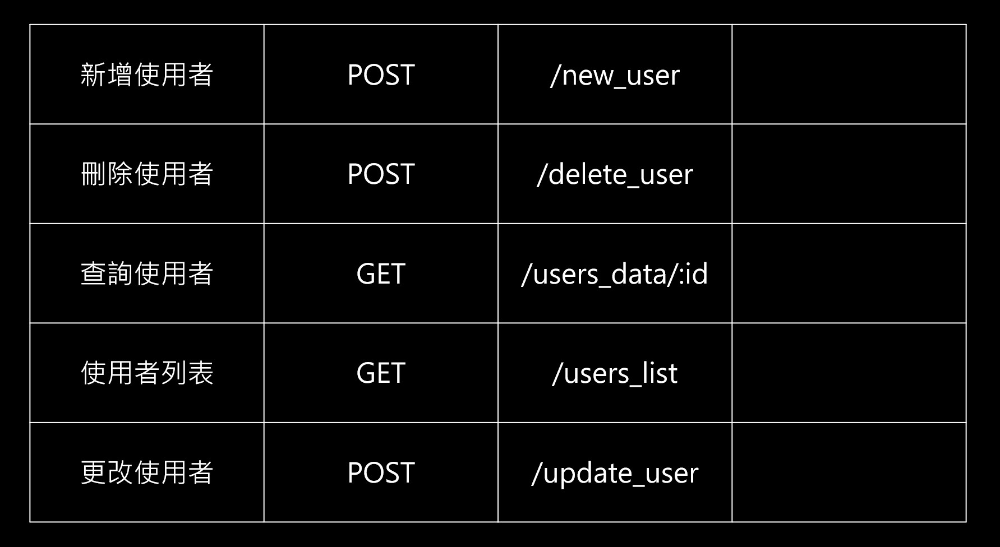
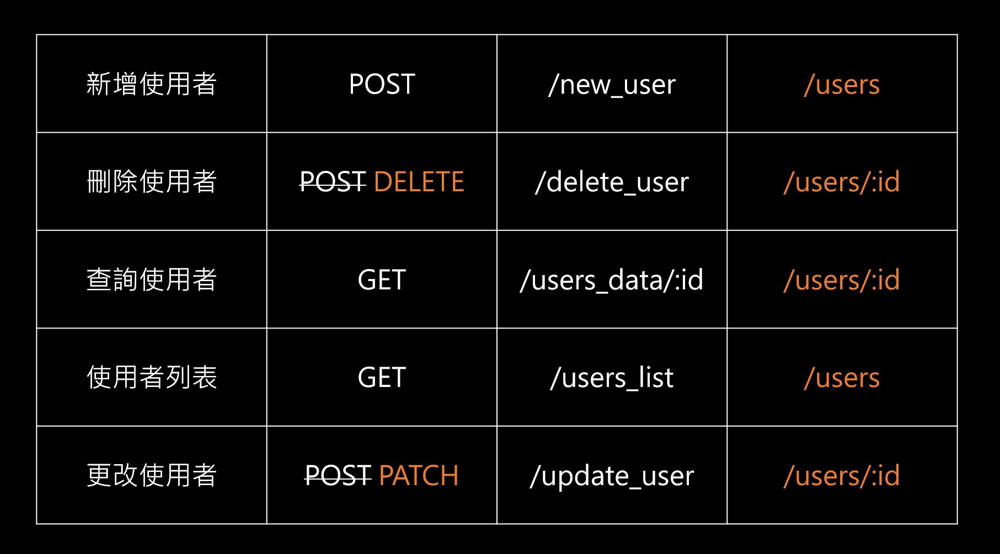

終於瞭解它了。
簡述
RESTful（Representational State Transfer）表現層狀態轉換；它的名字沒有很重要，只是讓你們知道一下而已。
但重要的事情是：
- 它是一種「風格」，不是「規範」
- 它是一種「風格」，不是「規範」
- 它是一種「風格」，不是「規範」
就好像每個人都有自己的 coding style，但總會有幾個比較主流的風格，像是 camelCase，isBoolean 等等這種大家都認同的約定俗成。RESTful 也是一樣，只是他是應用在 API 上面的一種風格。
你可以不照著大家的風格走，但別人就得多花心思看你寫的東西就是了。
RESTful 也就是這樣的概念而已，照著這個風格去設計 API，會讓大家用 API 的時候比較順。說穿了它的本意只是「希望你好好的善用 HTTP 提供的動詞來設計 API」，僅此而已。
如果沒有 RESTful 的話？
沒有 RESTful 的話，一個 API 可能會被設計成這樣子：

從這張圖可以先看到一些問題，像是「刪除使用者」跟「更改使用者」怎麼會都是 POST？不是應該要用 DELETE 跟 PATCH 嗎？再來，每個功能都得特地建立一個新的網址路徑，是不是有點麻煩？
你可能會想說為什麼可以這樣子寫？但如果你寫過一點點的後端的話（不懂可以參考 這裡），就會知道不管是用哪個 HTTP 方法都不會影響你接下來要做的事情。
原因是這樣子，每個功能都對應到不同的網址，所以只要有人發送 request 到這隻 API，管他要用 POST 還是 GET，後端都可以做相對應的處理。
也許這樣子還是可以實現該有的功能，但終究還是會碰到一些小麻煩：
1. 每個人的命名風格不同
以上面的「新增使用者」來說，A 可能想取 new_user，B 可能想取 creat_user，C 可能想叫creat_new_user，那最後到底該叫什麼才好？如果沒有一個統一的風格就會變得很麻煩。
2. 每個人的動作不一致
A 可能覺得要存取使用者資料就該用 GET，B 覺得無所謂；或是 A 決覺得刪除使用者資料該用 DELETE，B 覺得 POST 也沒差阿，反正只要發到正確的網址我都還是可以處理阿。
為什麼會有這種問題？因為 HTTP 規定的只是你在「溝通」的時候要遵循 GET POST DELETE 這些格式，但並它沒有規範你在收到訊息後的「實際行為」。
以訂便當的例子來說，如果有個新來的同學不知道「訂便當」要用 POST 代號，所以他寫成GET：
1 | GET |
最後收到這張紙條的人雖然看到上面寫的是 GET，但還是能從內容判斷出這個請求是要「訂便當」，也就是 POST，所以依然可以幫他完成訂便當的動作。
換成 HTTP 也是同樣的概念，你在前端要發 request 一定要遵循 HTTP 的方式來溝通，但後端接到 request 後他「實際要做什麼」，都不在 HTTP 規範的範圍裡。
如果有了 RESTful？

為了解決上面的問題，RESTful 提出一個很簡單的概念：把資源給統一化
仔細想一下，其實不管是新增、刪除、查詢等等的動作，我們都是在對 users 這個資源做事情，那為什麼不乾脆就統整成 users，再搭配 HTTP 提供的那些動作來做區分就好？
以上面例子來說，要讓 /users 這個網址同時處理「新增」跟「刪除」這兩個動作，你只要發送一個 POST 或 GET 的請求我就能看出來你想做的是什麼，所以就不必在分成 /new_user 或 /creat_user 了。
總而言之，RESTful 只是一個「風格」，不是「規範」，你不想使用也沒關係。這就跟在寫 HTML 的時候很像，HTML 沒有規定你一定要用 <article>、<section> 那些語意標籤。你可以都不要用那些標籤，一路 <div>、<span> 到底。
這會怎麼樣嗎？不會，只是沒有這麼一目了然而已。